Why the Sea Monster
The theme of the exhibition is “a fixed world”, after global warming, the AI bubble, the wars, the sixth extinction and even the Anthropocene itself. Our early ideas were gentle things like bioluminescent flowers and fireflies. Then someone suggested the ocean, and I started thinking about Moby-Dick and Vingt mille lieues sous les mers.
Sea Monsters, I said.
In the 19th century, slaying the sea monster was once the highest proof of courage. Now, we have grown from killing killer whales to shouting out for freeing them from sea-themed amusement parks. What if we bring back the sea monsters and remind people that they are able to exist with us in a new way, such as coexistence?
We treated the gallery floor as the sea, showing only the head and tentacle tips so visitors could imagine the larger creature beneath.

How It's Made
Ok, nice. So we got this yard of white nylon here. How are we turning it into this sea monster?
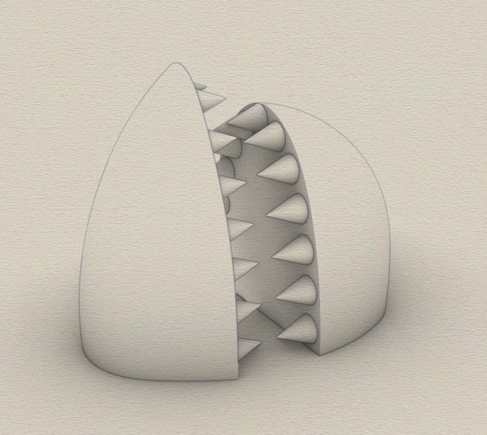
Digital head model Digital tentacle model
Digital tentacle model
Modeling
I modeled the five tentacles, and my teammate Siyu modeled the head. That's how we started.
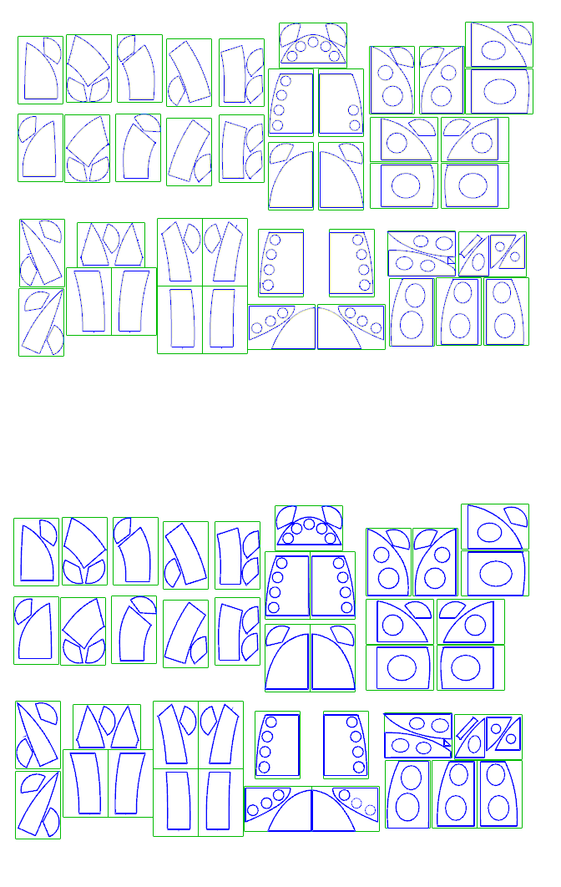

From 3D to 2D
Well, now we have the 3D models. We are going to separate the models along certain cutting lines and eventually unwrap them into 2D panels that we can print and use on plain fabric.
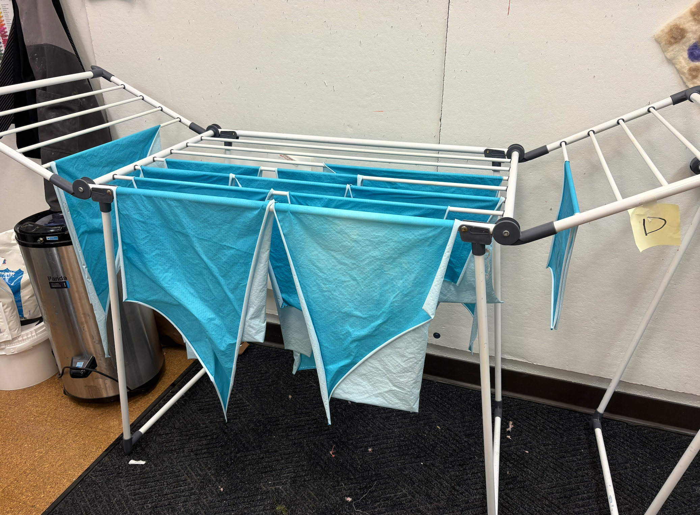
Blue panels for the outside of the head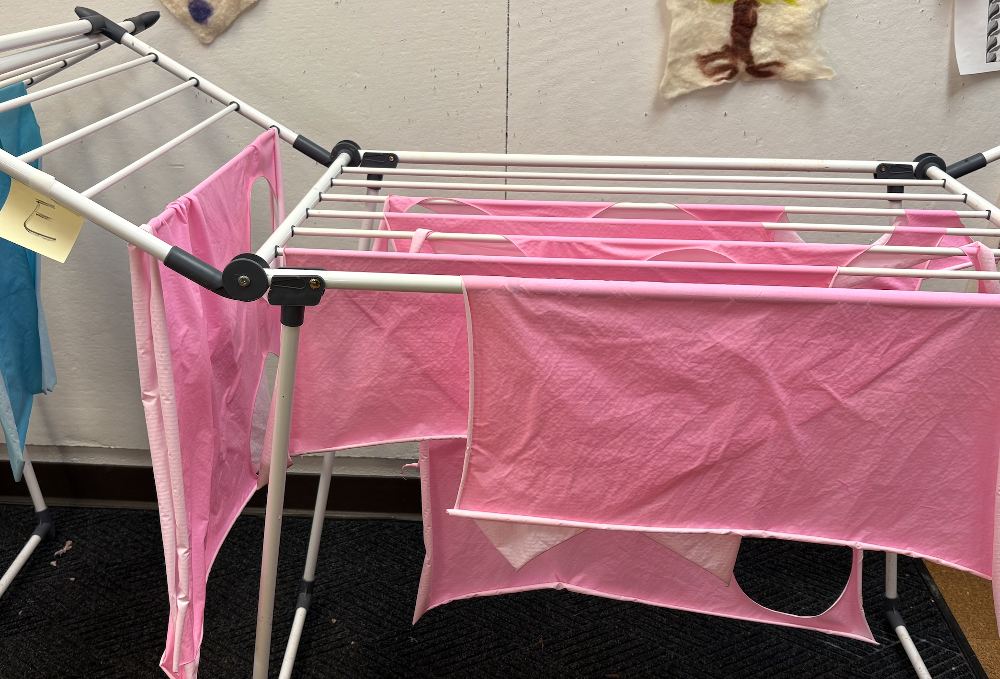
Pink panels for the inside of the mouthCut & Dye
We laser-cut white nylon into panels using those 2D layouts. I then dyed the cut pieces blue for the head’s outside and pink for the mouth’s inside. The teeth and baffles inside the head stayed white.
What's a baffle, you may ask.
 Inside the head · one white baffle highlighted in teal
Inside the head · one white baffle highlighted in teal
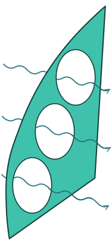
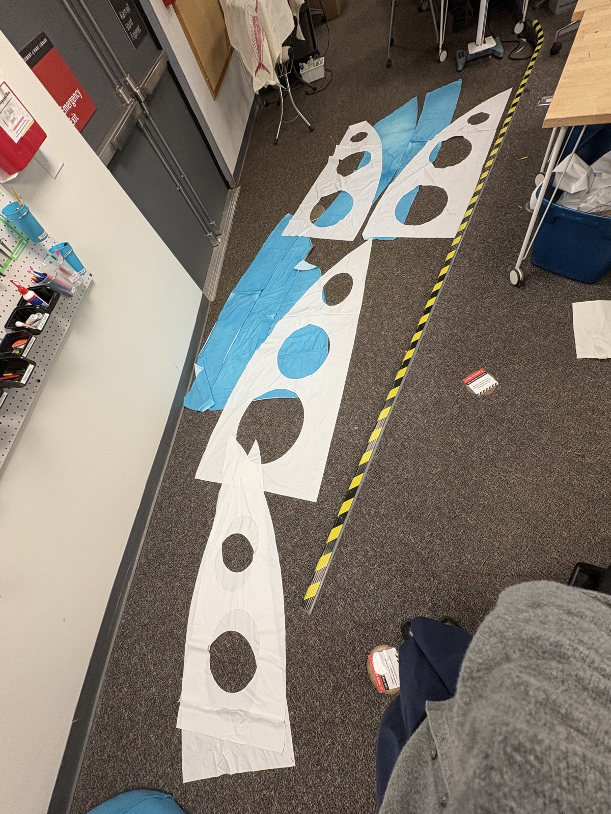
Cut baffle panels laid out before sewingHow to Keep the Shape?
We sewed the cut panels into a shell and added baffles to the head. A baffle is a fabric divider that limits how far the fabric can bulge when air fills the head. The openings in the baffle let air move through this wall while the remaining fabric helps hold the intended curve.
 Inflated head before the exhibition
Inflated head before the exhibition
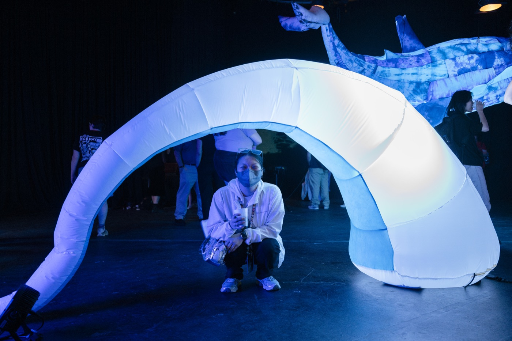
Illuminated tentacle in the studioNow Inflate!
We put in costume fans to fill the sewn parts, pushing the nylon toward its modeled curves. We placed the head and tentacles across the studio and lit them. Now a playground is created!
Soft Things
In architecture, people observe models from a careful distance and almost never touch them. Soft fabrication inverts that. Inflated fabric gives people the impression that it will not break, so they do not hesitate. Everyone has been inside a bouncy castle. The material carries that memory before you say a word.


The installation asked for our bodies too. We stood inside the studio to decide where each piece should go, then one of us walked back to see if the placement looked right from a distance. We crouched to install lights, crawled under fabric to find fan connections, held panels above our heads during inflation.

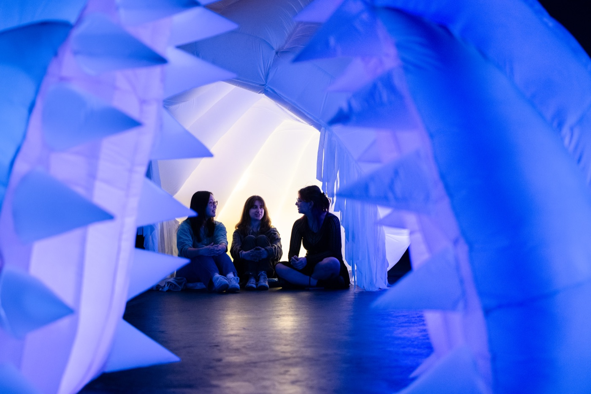
There is also something disarming about an object this large being this temporary. The entire creature compresses into a few bags. It fills a room and then it disappears. A week later it can fill a different room and become something else entirely.
Most of what we live in does not work like that. The buildings around us stay where they are, bound to their sites and to the investments that put them there. This creature has no site. It borrows a room, transforms it, and gives it back.
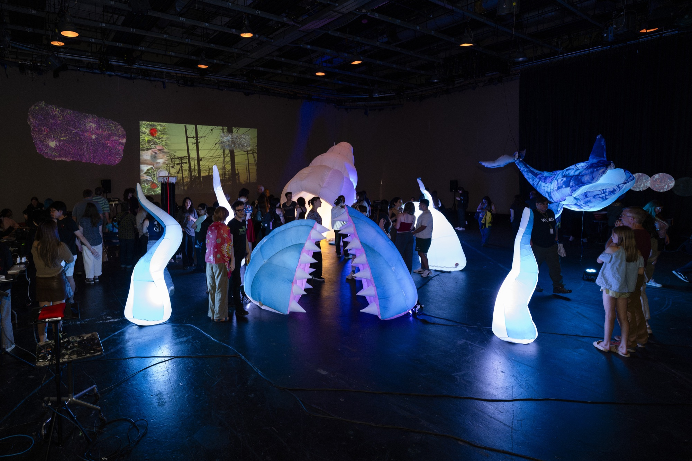
On show night, the music and drama students projected waves and deep-water footage onto the surrounding screens. With stage lights glowing inside the tentacles and the mouth lit from within, the room started feeling like the bottom of something. Children started running straight into the monster's mouth and pretended to be swallowed. Adults followed, standing between the teeth and waving at cameras.

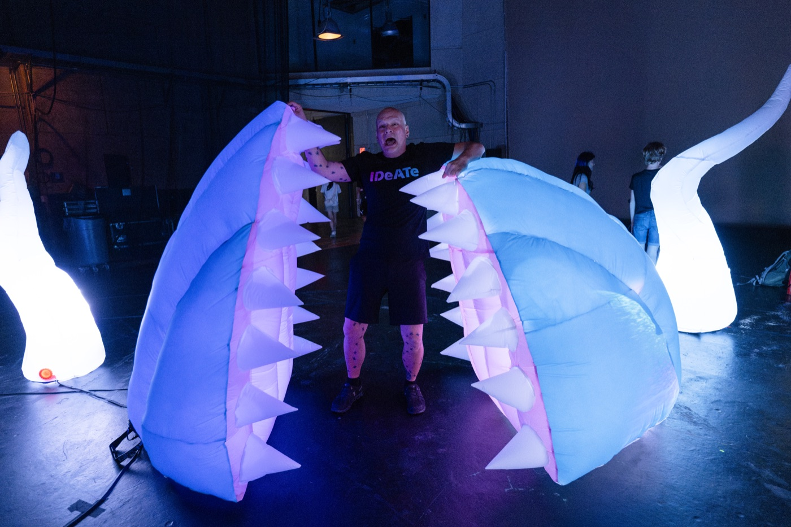
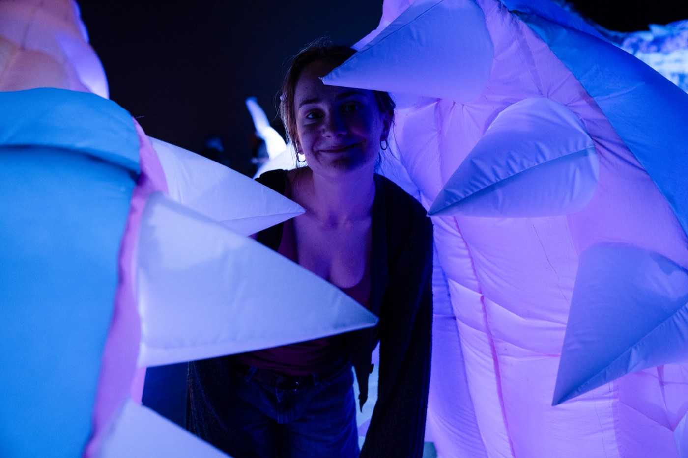
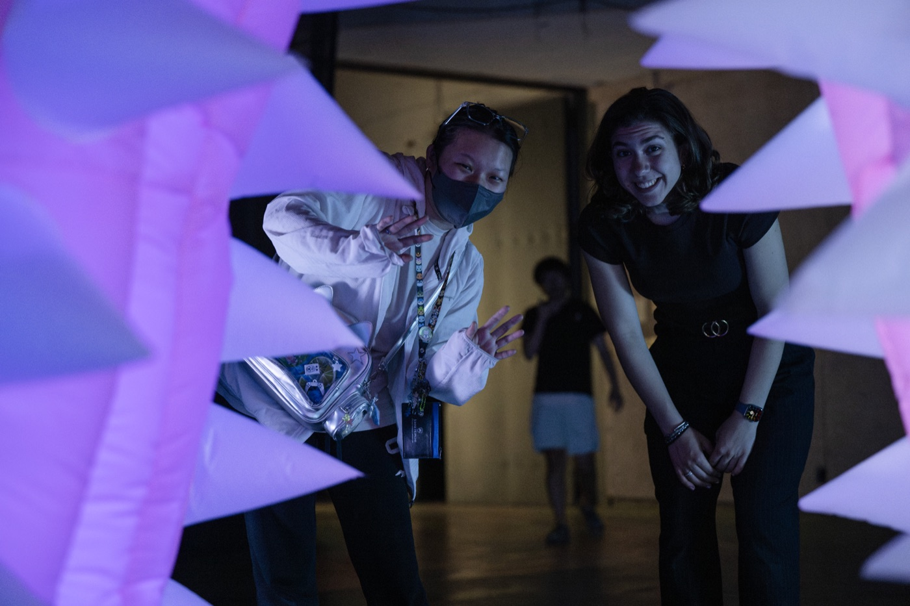
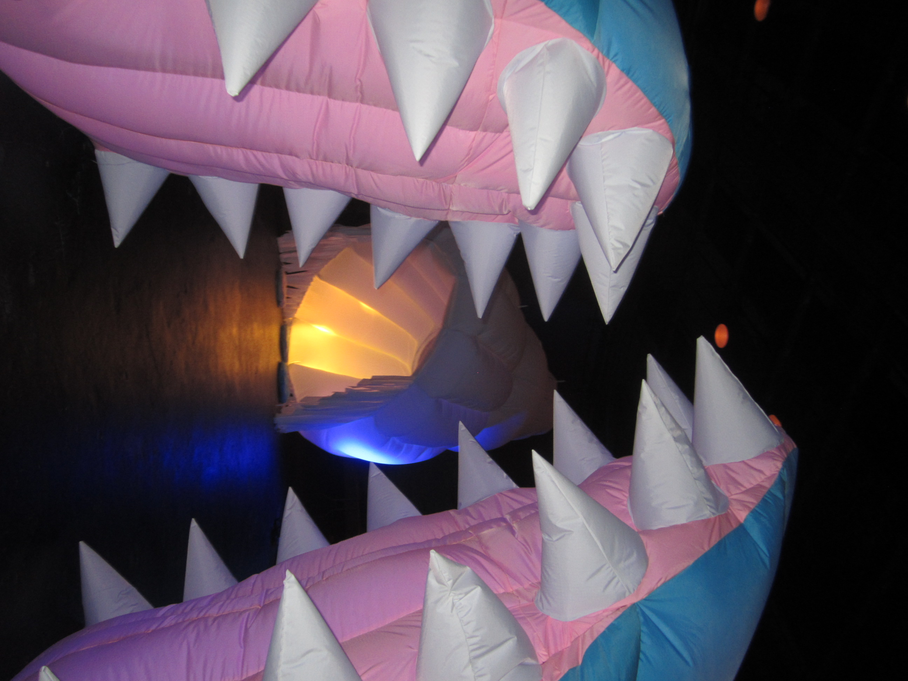
We had designed the creature around an idea about coexistence. It’s something that simply exists in its own right, not for us. But once it entered the room, it stopped being ours. People brought their own readings, their own play, their own reasons for walking in.
That is how public work operates.
The Sea Monster was shown again at Ideate's 2026 Meet Me@ exhibition. ↗
Acknowledgment
This was a five-person collaboration, and every part of it was shared. We are grateful to our faculty advisor Olivia Robinson, whose material knowledge and sustained presence throughout installation helped carry an ambitious idea into the room.
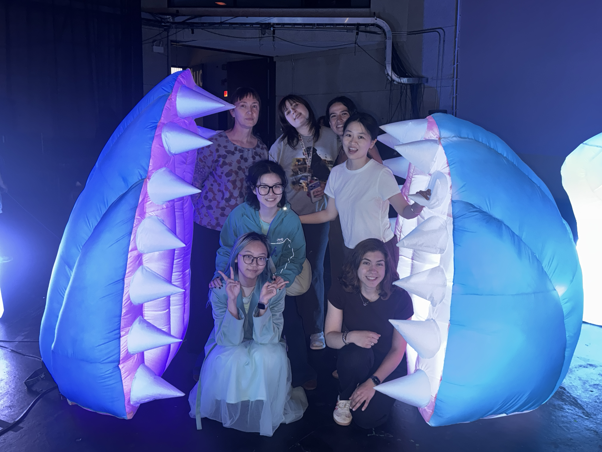